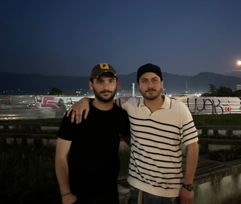
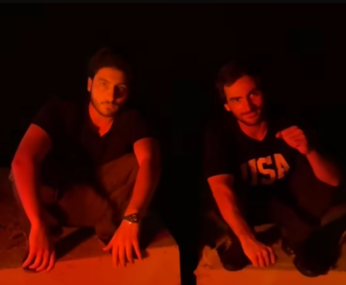
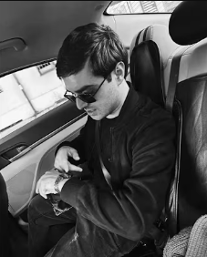
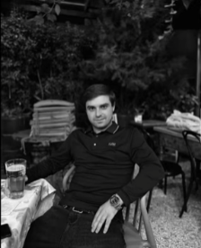
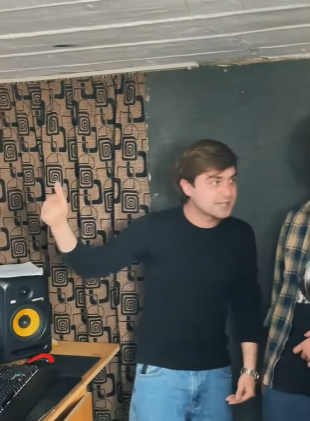
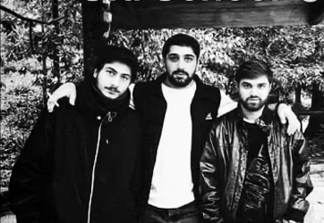
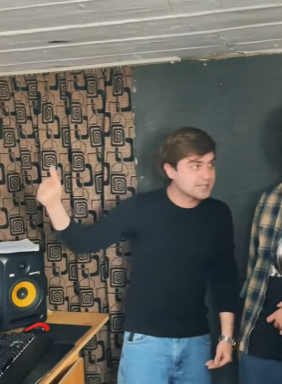
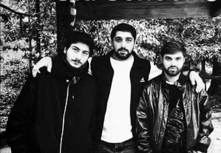

This is a website For Georgian hip-hop group IV Dasi
Subscribe IV Dasi
IV Dasi is a very popular hip-hop group in Georgia.
Their aggressiveness is expressed in their diss songs,
where they show everyone how dangerous and cool they are.
The entire country follows the work of the guys from Kutaisi,
and people are eagerly awaiting their new songs.





 



C.J (saba)
C.J.'s name is Saba khvareshia. His aggression was expressed earlier, but now we get more real-life examples. He is an active singer from the West and a guy who stands by his side.
He started his activities on the street by smoking cigarettes and stealing, but it developed. It's not good now, but it's okay.
Vache Vacheishvili
Vache is a serious street guy with sharp eyes and an even sharper tongue.
He respects the West and its people, but he never forgets to joke about how the streets here don’t come with
manuals or Hollywood endings. His humor is bitter, ironic — he laughs at the struggles life throws at him, but
he never bends. Vache is the type who can clown you with a joke and still make you respect him. Loyal to his
brothers, dangerous to his enemies, he carries himself
like a man who has seen it all and still finds something to laugh about — even if the joke cuts deep.
Petto
This is a street lyricist – a man who lives
and breathes rap on the corners, where every bar he spits comes from the
heart. He doesn’t care about flashy chains or fake
stories; what matters to him is
truth and raw expression. His rhymes carry weight,
built on real struggles, brotherhood, and loyalty.
Disrespecting his brothers is the one line you
don’t cross – he protects his people with pride. He sees through
the fakes and the “snakes,” and he won’t hesitate to call them out or shut them down.
To him, rap isn’t just music – it’s a weapon of truth and a shield for his family.
Mamu
Mamu walks with a heavy presence — a man who doesn’t waste words, but when he speaks, the truth stings
sharper than a blade. He’s rooted in the streets, yet his vision stretches further than concrete walls. Irony
is his weapon; he flips life’s hardships into punchlines that only the real ones can understand. Loyal to his
circle, cold to pretenders, Mamu doesn’t chase
respect — respect finds him. He’s the type who can turn silence into pressure, and a single smirk into a statement.